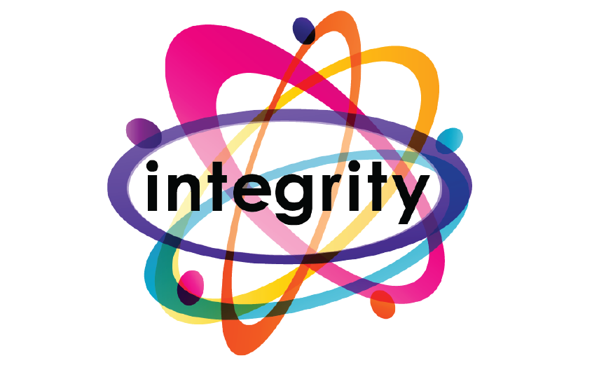
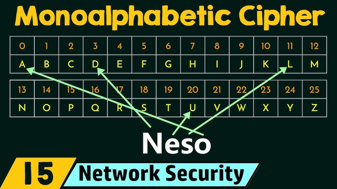
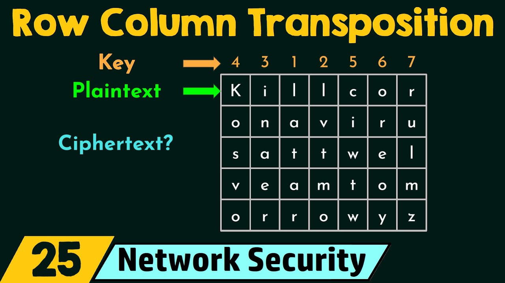
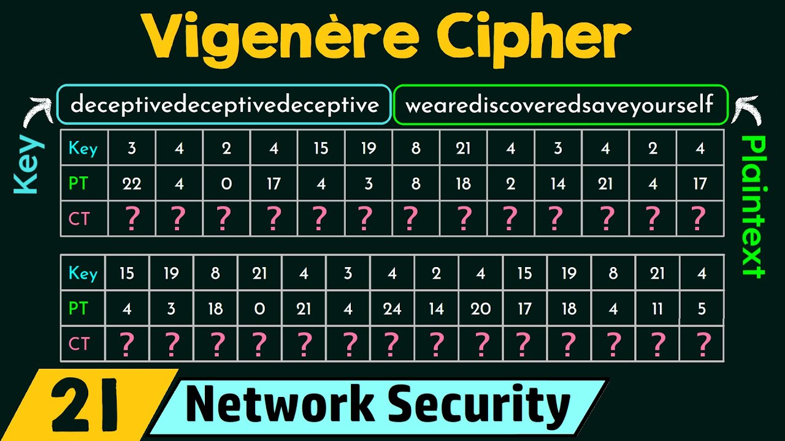
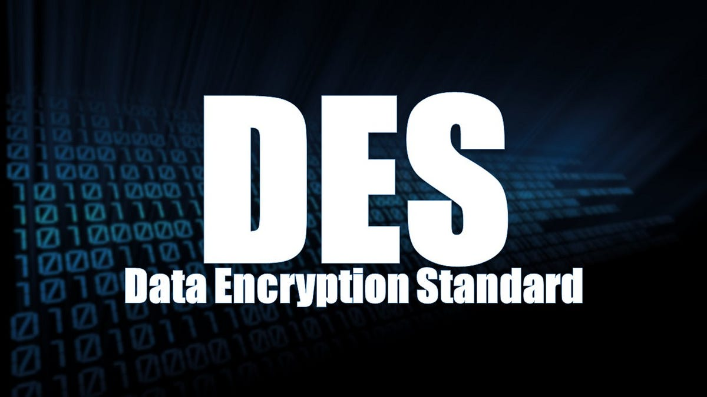
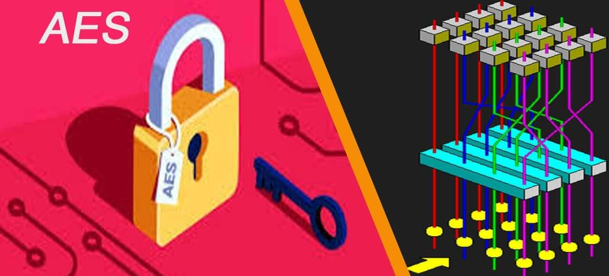

WHAT IS CRYPTOGRAPHY?
Cryptography is technique of securing information and communications through use of codes so that only those person for whom the information is intended can understand it and process it. Thus preventing unauthorized access to information. The prefix “crypt” means “hidden” and suffix “graphy” means “writing”. In Cryptography the techniques which are use to protect information are obtained from mathematical concepts and a set of rule based calculations known as algorithms to convert messages in ways that make it hard to decode it. These algorithms are used for cryptographic key generation, digital signing, verification to protect data privacy, web browsing on internet and to protect confidential transactions such as credit card and debit card transactions.
Techniques used For Cryptography:
In today’s age of computers cryptography is often associated with the process where an ordinary plain text is converted to cipher text which is the text made such that intended receiver of the text can only decode it and hence this process is known as encryption. The process of conversion of cipher text to plain text this is known as decryption.
FEATURES OF CRYPTOGRAPHY

Integrity
Non-repudiation
TYPES OF CRYPTOGRAPHY
Symmetric Key Cryptography:
It is an encryption system where the sender and receiver of message use a single common key to encrypt and decrypt messages. Symmetric Key Systems are faster and simpler but the problem is that sender and receiver have to somehow exchange key in a secure manner. The most popular symmetric key cryptography system are Data Encryption System(DES) and Advanced Encryption System(AES).
Hash Functions:
There is no usage of any key in this algorithm. A hash value with fixed length is calculated as per the plain text which makes it impossible for contents of plain text to be recovered. Many operating systems use hash functions to encrypt passwords.
Asymmetric Key Cryptography:
Under this system a pair of keys is used to encrypt and decrypt information. A receiver’s public key is used for encryption and a receiver’s private key is used for decryption. Public key and Private Key are different. Even if the public key is known by everyone the intended receiver can only decode it because he alone know his private key. The most popular asymmetric key cryptography algorithm is RSA algorithm.
Author, A. A. (2023). Cryptography and its types.
CRYPTOGRAPHY ALGORITHMS
MONOALPHABETIC CIPHER
A monoalphabetic cipher is any cipher in which the letters of the plain text are mapped to cipher text letters based on a single alphabetic key. Examples of monoalphabetic ciphers would include the Caesar-shift cipher, where each letter is shifted based on a numeric key, and the atbash cipher, where each letter is mapped to the letter symmetric to it about the center of the alphabet. Monoalphabetic Cipher is described as a substitution cipher in which the same fixed mappings from plain text to cipher letters across the entire text are used.
COLUMNAR TRANSPOSITION CIPHER
Given a plain-text message and a numeric key, cipher/de-cipher the given text using Columnar Transposition Cipher. The Columnar Transposition Cipher is a form of transposition cipher just like Rail Fence Cipher. Columnar Transposition involves writing the plaintext out in rows, and then reading the ciphertext off in columns one by one.
POLYALPHABETIC
A Polyalphabetic cipher is any cipher based on substitution, using multiple substitution alphabets. The Vigenère cipher is probably the best-known example of a polyalphabetic cipher, though it is a simplified special case. Polyalphabetic Cipher is described as substitution cipher in which plain text letters in different positions are enciphered using different cryptoalphabets.
RIVEST-SHAMIR-ADLEMAN
RSA algorithm is an asymmetric cryptography algorithm. Asymmetric actually means that it works on two different keys i.e. Public Key and Private Key. As the name describes that the Public Key is given to everyone and the Private key is kept private. The idea of RSA is based on the fact that it is difficult to factorize a large integer. The public key consists of two numbers where one number is a multiplication of two large prime numbers. And private key is also derived from the same two prime numbers. So if somebody can factorize the large number, the private key is compromised. Therefore encryption strength totally lies on the key size and if we double or triple the key size, the strength of encryption increases exponentially. RSA keys can be typically 1024 or 2048 bits long, but experts believe that 1024-bit keys could be broken in the near future. But till now it seems to be an infeasible task.
DATA ENCRYPTION STANDARD
The Data Encryption Standard (DES) is a symmetric-key block cipher published by the National Institute of Standards and Technology (NIST). DES is an implementation of a Feistel Cipher. It uses 16 round Feistel structure. The block size is 64-bit. Though, key length is 64-bit, DES has an effective key length of 56 bits, since 8 of the 64 bits of the key are not used by the encryption algorithm (function as check bits only).
ADVANCED ENCRYPTION STANDARD
Advanced Encryption Standard (AES) is a specification for the encryption of electronic data established by the U.S National Institute of Standards and Technology (NIST) in 2001. AES is widely used today as it is a much stronger than DES and triple DES despite being harder to implement. AES encrypts data in blocks of 128 bits each, that means it takes 128 bits as input and outputs 128 bits of encrypted cipher text as output. AES relies on substitution-permutation network principle which means it is performed using a series of linked operations which involves replacing and shuffling of the input data.